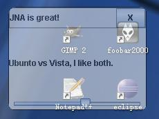
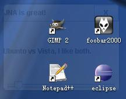

2011年04月02日 星期六 04:39 P.M.
Swing透明和变换
http://www.blogjava.net/ruislan/archive/2007/10/24/154689.html
http://java.net/projects/jna/downloads/directory/3.2.7
posted on 2007-10-21 13:43 ruislan
以前或许大家对一个UI组件是否透明没有那么关心，但是自从Vista的毛玻璃出现后，UI透明就成了大家非常关注的一个话题，于是Java阵营开始了铺 天盖地的讨论如何实现透明的效果，但是很不幸的是无论组件如何透明和变换，但是能够放置于屏幕任何位置的Window一族就是没法透明和变形，原生代码的 问题还是交给原生代码来解决吧。
自己写原生代码是可怕的，特别是对我这种只知道Java的平凡程序员，所以我们得借助一个非常方便的跨平台的调用OS function方便的Lib，JNA便是最佳选择（那个谁，这里不是讨论JRuby&JPython的）。
so, all robots, transform!
下面我们要做一个界面是圆角四边形的，中间有一个滑动条来滑动调节透明度。先看看做好的截图。
http://www.blogjava.net/images/blogjava_net/ruislan/tr1.jpg

http://www.blogjava.net/images/blogjava_net/ruislan/tr2.jpg

http://www.blogjava.net/images/blogjava_net/ruislan/tr3.jpg
注意图中的JFrame边角已经变成了圆弧，滑动滑块，JFrame开始透明，桌面的图标显现出来，下面是代码。
/**
* @(#)TransparentFrame.java v0.1.0 2007-10-21
*/
package
ruislan.rswing.test;
import
java.awt.BorderLayout;
import
java.awt.Color;
import
java.awt.Container;
import
java.awt.Dimension;
import
java.awt.Toolkit;
import
java.awt.event.ActionEvent;
import
java.awt.event.ActionListener;
import
java.awt.geom.RoundRectangle2D;
import
javax.swing.JButton;
import
javax.swing.JFrame;
import
javax.swing.JLabel;
import
javax.swing.JPanel;
import
javax.swing.JSlider;
import
javax.swing.border.LineBorder;
import
javax.swing.event.ChangeEvent;
import
javax.swing.event.ChangeListener;
import
com.sun.jna.examples.WindowUtils;
//hxzon //import com.sun.jna.platform.WindowUtils;
/**
* Transparent JFrame use JNA
*
*
@author
ruislan <a href="mailto:z17520@126.com"/>
*
@version
0.1.0
*/
public
class
TransparentFrame {
private
JFrame frame;
private
JPanel container;
private
JSlider slider;
private
JPanel titleBar;
private
JLabel titleLabel;
private
JButton closeButton;
public
static
void
main(String[] args) {
new
TransparentFrame().launch();
}
private
void
launch() {
createUI();
launchUI();
}
protected
void
launchUI() {
frame.setVisible(
true
);
}
protected
void
createUI() {
System.setProperty(
"
sun.java2d.noddraw
"
,
"
true
"
);
frame
=
new
JFrame();
frame.setSize(
200
,
150
);
frame.setAlwaysOnTop(
true
);
frame.setUndecorated(
true
);
container
=
new
JPanel();
frame.setContentPane(container);
container.setLayout(
new
BorderLayout());
container.add(
new
JLabel(
"
Ubunto vs Vista, I like both.
"
),
BorderLayout.CENTER);
container.setBorder(
new
LineBorder(Color.BLACK));
titleBar
=
new
JPanel();
titleBar.setLayout(
new
BorderLayout());
titleLabel
=
new
JLabel(
"
JNA is great!
"
);
titleBar.add(titleLabel, BorderLayout.CENTER);
titleBar.setBorder(
new
LineBorder(Color.GRAY));
closeButton
=
new
JButton(
"
X
"
);
closeButton.setFocusPainted(
false
);
closeButton.addActionListener(
new
ActionListener() {
@Override
public
void
actionPerformed(ActionEvent e) {
System.exit(
0
);
}
});
titleBar.add(closeButton, BorderLayout.EAST);
container.add(titleBar, BorderLayout.NORTH);
slider
=
new
JSlider(
0
,
100
);
slider.setValue(
100
);
slider.addChangeListener(
new
ChangeListener() {
@Override
public
void
stateChanged(ChangeEvent e) {
float
value
=
slider.getValue();
WindowUtils.setWindowAlpha(frame, value
*
0.01f
);
}
});
container.add(slider, BorderLayout.SOUTH);
RoundRectangle2D.Float mask
=
new
RoundRectangle2D.Float(
0
,
0
, frame
.getWidth(), frame.getHeight(),
20
,
20
);
WindowUtils.setWindowMask(frame, mask);
centerWindow(frame);
}
public
static
void
centerWindow(Container window) {
Dimension dim
=
Toolkit.getDefaultToolkit().getScreenSize();
int
w
=
window.getSize().width;
int
h
=
window.getSize().height;
int
x
=
(dim.width
-
w)
/
2
;
int
y
=
(dim.height
-
h)
/
2
;
window.setLocation(x, y);
}
}
利用JNA来制作透明效果非常简单，只需要调用WindowUtils.setWindowAlpha(window, alpha) 就可以了。当然这是JNA特别为UI写的工具代码。如果要改变形状，用WindowUtils.setWindowMask(window, shape)或者WindowUtils.setWindowMask(window, icon)就可以了，但是要注意一点必须设置System.setProperty("sun.java2d.noddraw", "true")，否则JNA会告诉你这个程序不支持透明。当然要运行起来，还得需要两个Jar，jna.jar 和 examples.jar ，都不是很大，只有200多K。
虽然这篇文章只是介绍了一下JNA关于Swing的简单用法，但是有了这个我最先到的便是可以做类似于Yahoo Widget和Google Widget之类的东西了，还可以做好看的fishEye,SideBar，JNA的JAR两个合起来不过400K，却能让这么多复杂的事情简单化，真是 精湛的艺术啊，嗯。